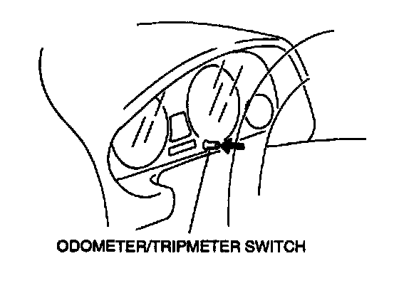

Without Scan Tool
INSTRUMENT CLUSTER INPUT/OUTPUT CHECK MODENOTE: In this mode, it is possible to check the item in the following chart.
Diagnostic Trouble Code Chart
NOTE: Diagnostic trouble code which are not listed may be indicated, but they cannot be inspected.
Operating Order
NOTE: Connect the negative battery cable after 30 second: or more have passed after disconnecting the cable, then operate the input/output check mode again after terminating the input/output check mode.
1. Close the all doors.
2. Disconnect the negative battery cable.
3. Open the driver's side door.
4. Connect the negative battery cable.
5. Perform the following procedures within 30 second:, after connecting the negative battery cable.
1. Turn the ignition switch to ON.
2. Push the door switch 3 times.

3. Push the odometer/tripmeter switch 3 times.
Checking Order
NOTE: The diagnostic trouble codes are displayed in numerical order. (While performing the inspection, if you want to inspect a diagnostic trouble code of which the number is smaller that the code number you are currently inspecting, terminate the check mode then repeat the inspection from the beginning.) If rotate the wheels, cancel the input/output check mode.
Check Code 00-14
NOTE: The diagnostic trouble codes can be fast forward by pushing and holding the odometer/tripmeter switch for 1 second or more.
1. Push the odometer/tripmeter switch and select the diagnostic trouble code.
2. Inspect each diagnostic trouble code by following the related inspection procedures. (Refer to Diagnostic Trouble Code Procedures.)
Check Code 31
1. Turn the ignition switch to ACC.
2. Push the odometer/tripmeter switch and select the diagnostic trouble code.
3. Inspect each diagnostic trouble code by following the related inspection procedures. (Refer to Diagnostic Trouble Code Procedures.)
Cancel Order
- Cancel the input/output check mode by turning the ignition switch to LOCK then back to ON.
NOTE: Cancel the input/output check mode by leaving the instrument cluster in check mode for approximately 45 minutes.